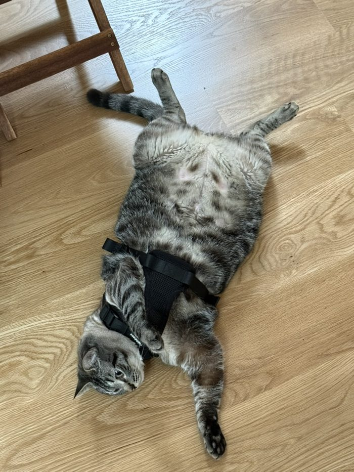

Board-certified dermatology
Skincare with a real dermatologist behind it.
Online skin visits and a tidy little shelf of products, led by a board-certified dermatologist. Honest advice, simple routines, and a prescription only if it'll truly help.
Named after a cat. Run by a doctor. Earl handles morale.
How it works
A real dermatologist, online, in three steps.
No bots, no quiz-result "diagnoses." A board-certified dermatologist reviews your skin and builds a plan that fits you.
Tell us about your skin
A few questions and photos, whenever it suits you. Five minutes, on your couch.
A dermatologist reviews it
Dr. Eckert — a board-certified dermatologist — actually looks at your case, not an algorithm or a chatbot.
Get your plan
A simple routine, plus a prescription sent to a licensed pharmacy if it is medically appropriate. Often, you'll use less than you do now.
What we help with
Real conditions, looked at by a real dermatologist.
Start with a visit and we'll build a plan that fits — products, a prescription, or honestly, something simpler than you're using now.
More conditions
Warts, molluscum, folliculitis, fungal rashes, canker sores, and more.
See all conditions →The shelf, kept short
Gentle basics. Nothing you don't need.
Gentle Cleanser
Fragrance-free and non-stripping. Cleanses without the tight, squeaky feeling.
Calm Serum
Lightweight hydration that helps soften the look of redness through the day.
Daily Moisturizer
Quiet, comfortable hydration made for sensitive, reactive skin.

Why a cat?
Real medical help for your skin. The honest amount of product.
Earl Is My Cat was started by Dr. Auston Eckert, a board-certified dermatologist who got tired of watching people spend a fortune on ten-step routines that didn't work. The idea is simple: actual medical care for your skin, only the products you need, and none of the hype.
Earl — the real cat, the namesake — supervises. Poorly.
Your skin, looked at by an actual dermatologist.
Start a visit in about five minutes. Dr. Eckert reviews every one — and tells you the truth about what you need.
Start a visit